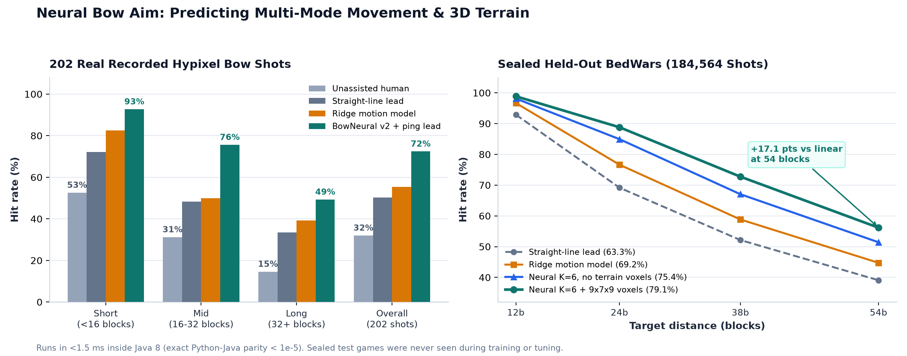
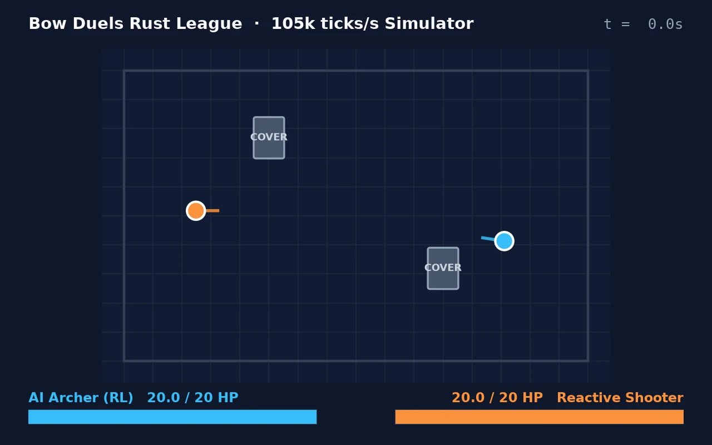

Probing the skill ceiling of Minecraft PvP—and predicting opponents
This isn't a neat, single-purpose library. It's a collection of projects I built out of genuine curiosity around two questions: how deep does the skill ceiling for classic 1.8.9 Sumo actually go (and how can I use those insights to get better myself?), and what happens when you train neural networks to predict real opponents in bows, duels, and BedWars?
Start wherever you're most curious

How Far Does the Sumo Skill Ceiling Go?
Started from watching the #1 Sumo player's sideways-KB edge flicks. Covers why you shouldn't W-tap immediately when hit, why our 7-CPS RL champion crushes W-tap (255–0–1), the surprising Ctrl sprint-reset discovery, and why adaptation is still an open mystery.
Read the Sumo breakdown →
Neural Bow Aim & Void-Kill Timing
Trained on 1.23M ticks of real Hypixel gameplay. Multi-mode K=6 predictions + 3D terrain voxels take real-shot hit rate from 32% raw / 50% linear to 72%+, with learned V_wait timing for void kills and snowball volleys.

Bow Duels, Modern Sword & BedWars
Curiosity detours into opponent prediction: a 105k ticks/s Rust Bow Duels league, emergent jump-resetting and delayed crits in Modern Sword (26.3), and 3D BedWars habit heatmaps (cool visually, honestly not very useful in-game).
Browse side explorations →Interactive browser demos (no Minecraft required)
Want to poke around the mechanics and replays yourself? All three interactive tools run right in your browser:

Why You Flew Back (Sumo Trade Guide)
Step frame-by-frame through five real Minemen Club exchanges to see early jumps, W-release traps, miss cooldowns, and KB braking in action.
Open trade guide →
Movement & Knockback, One Tick at a Time
Scrub through exact 1.8.9 movement ticks, toggle sprint-contact braking on or off, and inspect every floating-point velocity update.
Launch tick simulator →
Bow Duels Self-Play Arena
Watch evolved neural archers strafe around cover pillars and trade curved arrows from orbit or first-person POV.
Open 3D viewer →
The local 1.8.9 server lets you duel W-tap, sumo-league-remote-004, or slow the entire game down to half or quarter speed while seeing live KB-brake flashes, jump-reset feedback, and multi-POV replays. See the Play & Mod setup guide →